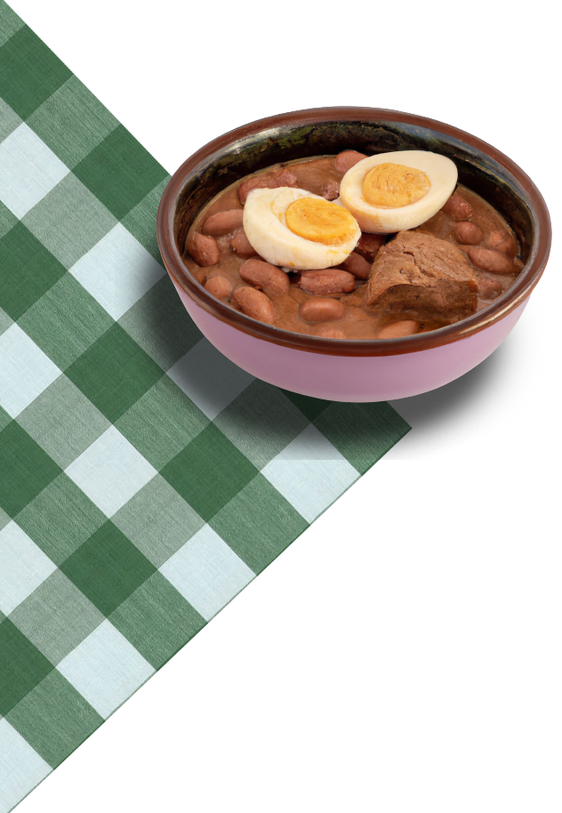
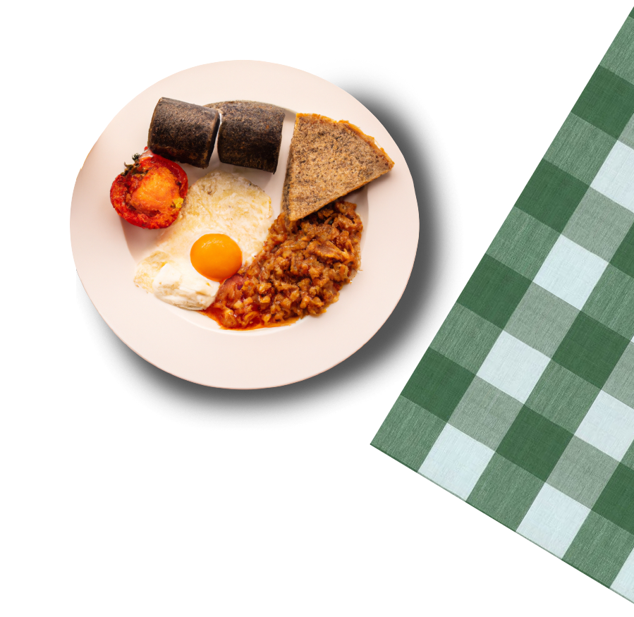

UN
MONDO
DI COLAZIONI
Le più particolari colazioni nel mondo

Egitto
La colazione egiziana è un pasto molto importante nella cultura del paese e viene spesso consumata in famiglia o con amici. Questo pasto è molto diverso da quello occidentale, in quanto viene composto principalmente da alimenti salati e speziati.
Uno dei piatti tipici della colazione egiziana è il ful medames, una purea di fave servita con olio d'oliva, prezzemolo, cipolla e limone.
Un altro piatto tipico è il taameya, una specie di falafel fatto con fave o ceci e spezie come cumino e coriandolo.
La colazione egiziana prevede anche l'uso del pane, spesso servito caldo e accompagnato da formaggio feta o da un'insalata di pomodori e cetrioli. Inoltre, è molto comune trovare sulla tavola anche il baladi, un tipo di pane integrale a base di farina di grano saraceno.
Il caffè viene spesso servito molto forte e speziato con cardamomo.
Un altro piatto molto comune nella colazione egiziana è il molokhia, una zuppa a base di foglie di juta cotta con aglio e coriandolo e servita con riso o pane. Infine, un altro piatto tipico è il gebna bel tamatem, formaggio feta servito con pomodori e olive.
La colazione egiziana è un pasto molto saporito e speziato, perfetto per iniziare la giornata con il giusto carico di energia.

Scozia
La colazione scozzese differisce dalle colazioni continentali per la sua sostanza e ricchezza di sapori. Questo pasto è un vero e proprio simbolo della cultura scozzese ed è molto amato dagli abitanti del luogo, ma anche dai turisti che visitano la Scozia.
Si compone di diversi elementi, come ad esempio uova, pancetta, salsicce, funghi, pomodori, fagioli e patate fritte. Questi ingredienti vengono cucinati in vari modi, ad esempio le uova possono essere servite strapazzate, fritte o in camicia, la pancetta e le salsicce vengono arrostite o grigliate e i funghi vengono cotti in padella con burro e aglio.
Inoltre, un'altra componente fondamentale della colazione scozzese è il porridge, una pappa di avena cotta con latte o acqua e servita con burro e zucchero a velo. Il porridge rappresenta un alimento energetico e nutriente, perfetto per iniziare la giornata con la giusta carica di energia.
Viene servito anche il tradizionale Haggis, un piatto a base di interiora di pecora o manzo, cotto insieme a farina d'avena e spezie.
Infine, la colazione scozzese viene spesso accompagnata da tè o caffè, ma anche da succo di frutta o acqua. La colazione scozzese è un pasto molto abbondante e calorico, perfetto per affrontare una lunga giornata di lavoro o di escursioni nella natura.
Polonia
La colazione polacca è un pasto sostanzioso e variegato che riflette la cultura culinaria del paese. In Polonia, la colazione viene spesso considerata il pasto principale della giornata e viene consumata con calma e serenità.
Uno dei piatti tipici della colazione polacca è il jajecznica, uova strapazzate servite con cipolle, pomodori e salsicce. Altri piatti molto comuni sono le kaszanki, salsicce fatte con sangue di maiale e orzo, e il kielbasa, salsicce affumicate servite con pane di segale.
La colazione polacca prevede anche l'uso di formaggi come il twarog, una specie di ricotta servita con pane integrale e marmellata di frutta. Inoltre, è molto comune trovare sulla tavola anche la zupa ogórkowa, una zuppa a base di cetrioli, patate e carne.
Per quanto riguarda le bevande, la colazione polacca prevede spesso il kawa, caffè servito con latte, o il herbata, tè nero servito con limone e miele. Inoltre, succhi di frutta naturali e spremuti al momento.
Un altro piatto molto comune nella colazione polacca è il pierogi, una sorta di ravioli ripieni di carne, patate o formaggio e serviti con burro e cipolle. Infine, il chleb, il pane di segale polacco, viene spesso servito caldo e croccante insieme a burro e marmellata.